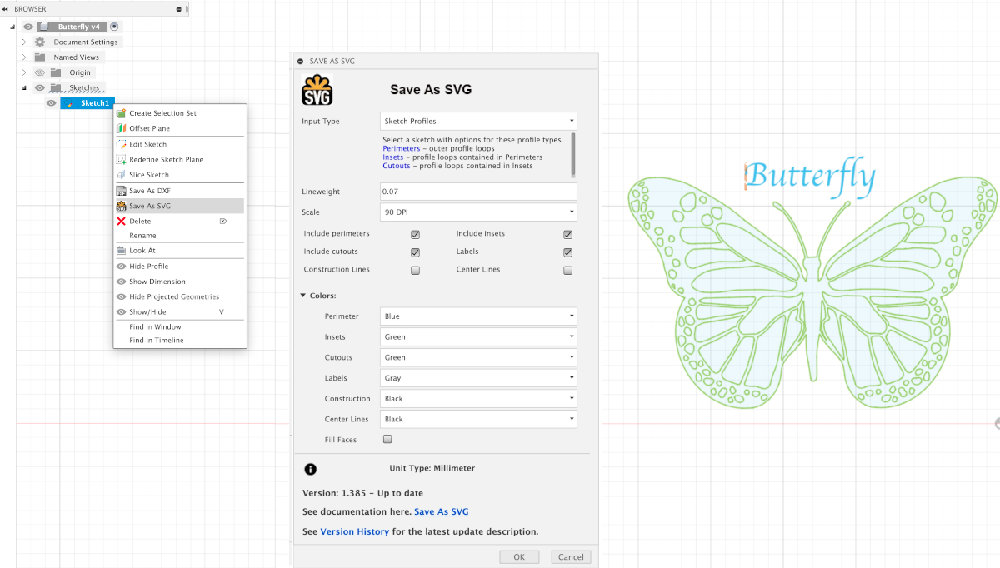

About Save As SVG
Save As SVG is a Fusion 360 add-in which exports Fusion 360 sketches as SVG files.
The goal of this section is to give you a quick overview of what Save As SVG is and how you might use it.
Save As SVG (SAS) allows you to create SVG files from your Fusion 360 sketches, making it easy to use your sketch designs in other applications or for manufacturing purposes.
SAS is invoked from the context menu of a sketch object in the browser tree as shown below. Multiple sketch objects can be selected and exported to SVG files with a single invocation.
The resulting SVG files are colored according to the sketch’s defined profile loops.
{kind=link}
The SVG (Scalable Vector Graphic) file created conforms to SVG standards and as the name implies, will be scalable. What this means is that the SVG file can be resized without losing quality, making it suitable for various applications such as web graphics, print designs, and more. Applications which import or view SVG files include vector graphic editors, web browsers, and CAD software.
The initial image size viewed by the application you will be importing it into will match the size of the sketch in Fusion 360 provided you match the export Scale for that application. The most common scale is 96 DPI used by most modern applications.
There are two Input Type options available in Save As SVG:
Entire Sketch - Exports all sketch curves in one selectable color.
Sketch Profiles - Exports profiles with selectable colors for each profile loop. Profiles loops are defined by their containment within each other. The outer most profile loop is identified as Perimeters. Profile loops immediately inside Perimeters are considered Insets and profile loops contained within Insets are considered Cutouts. Lines not part of a profile loop will be included as an Inset. The intent of this scheme is to provide control of SVG line coloring in a predictable way. Options are provided to include or exclude these profile types.
If the sketch includes labels, SAS will optionally export them as line vectors, providing the same visual appearance as text in the Fusion sketch.
Fusion sketches can include two additional line types, Construction and Centerline. SAS provides options to include these line types. When included, these line types will be exported as dashed lines in the SVG file.
SAS provides an option to specify the line weight or thickness. This together with line colors provides more control for laser cutting.
Note
SVG files exported by SAS are fully compliant with SVG standards. The scale, which is Dots Per Inch (DPI), can be specified to match the application you will be importing the SVG file into. The modern scale is 96 DPI and not all applications have migrated to this scale. See Scale for more information.